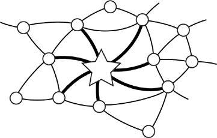

Star Workers
Knowledge work is a domain for which Taylorism was never intended. Knowledge work is just not very like factory work. There is no assembly line and there never will be, there aren’t many fixed rules, values are more subjective, measurements more dubious, judgment is all-important. This is a card game where all the cards are wild. Knowledge work is less like the jobs that Taylor was studying, and more like the job that he himself was doing when he studied them. It involves invention, abstraction, articulation, and skillful management of many human relationships.
In a study of workers at Bell Telephone Laboratories, interviewers asked engineers in one division to identify stars among their peers. They came up with a short list of such stars and set out to determine how their work procedures differed from those of their nonstar counterparts. Surprisingly, the stars approached their work in ways that were not very different from the way their peers did. As a purely mechanical matter, they did the same work pretty much the same way as everyone else. But there were marked differences in how they managed their networks of connections, liaisons to fellow workers whose cooperation was required to get anything done. For example, people tended to return the stars’ telephone calls much more quickly. So a star, on average, would receive answers in twenty minutes, while the norm for the whole laboratory was more like four hours. Why did they get better attention from coworkers and colleagues? There was no obvious answer, but they did. Clearly, the stars had long before taken whatever steps were necessary to establish good connections. They had spread around favors, been responsive themselves, nursed relationships, seen to other people’s essential human needs.

The “stars” had richer connections than their peers …
To establish a standardized way of doing any knowledge task, you end up focusing on the mechanics of the task. But the mechanics are a small and typically not very important portion of the whole. How the work goes on inside the nodes of the worker diagram is not nearly so important as how wide and rich are the connections.